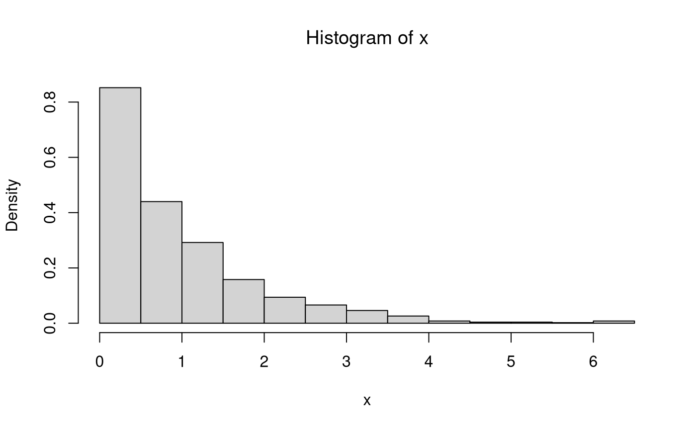
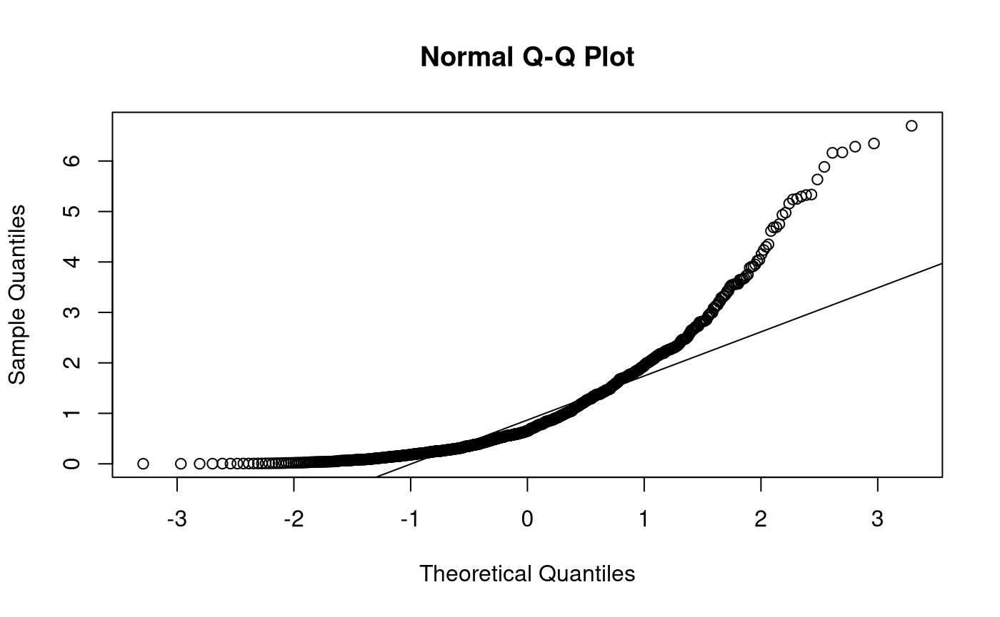
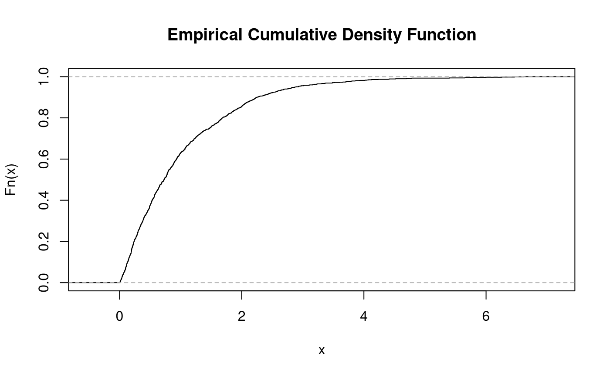
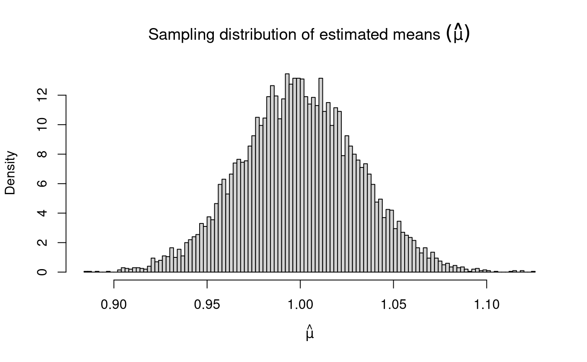
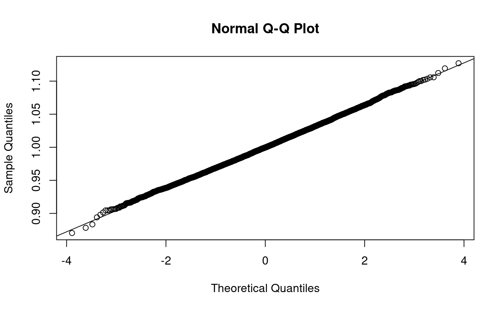
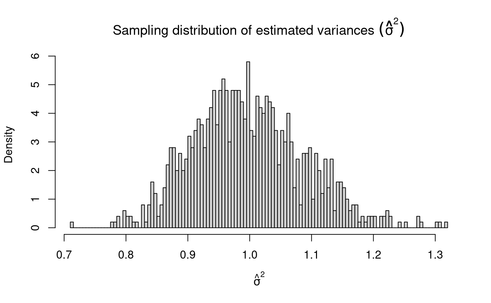
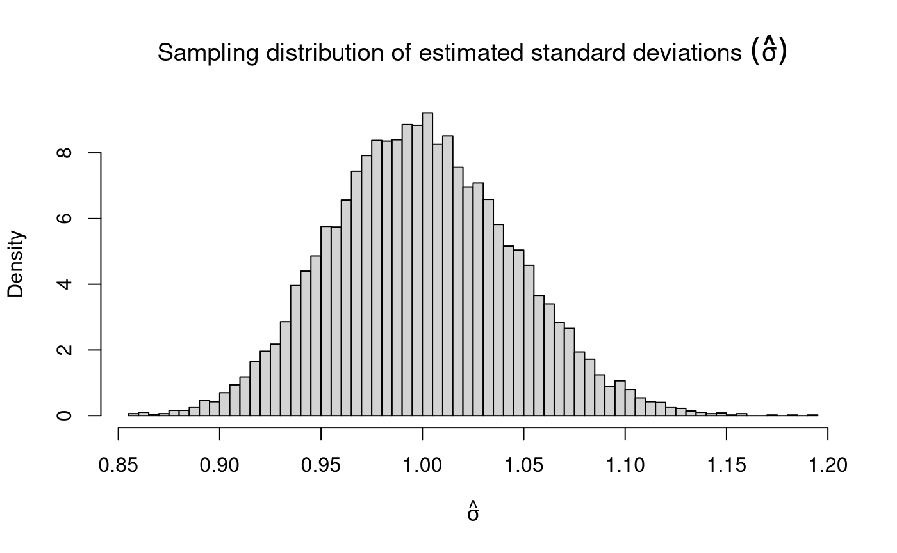
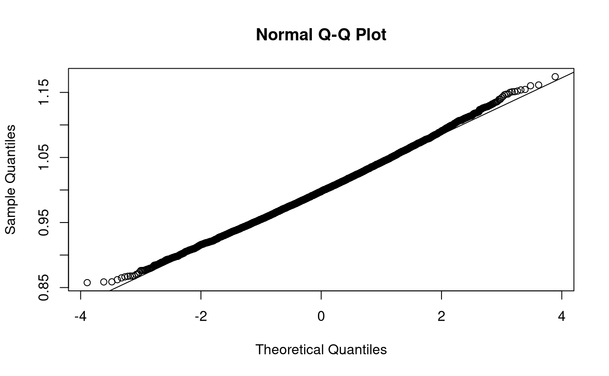

Test: Univariate Data Generation - Exponential Distribution
Ivan Jacob Agaloos Pesigan
2020-07-16
Source:vignettes/tests/test_univ_exp.Rmd
test_univ_exp.Rmdlibrary(testthat) library(MASS) library(jeksterslabRdata) context("Test univ Exponential Distribution.")
par(pty = "s") breaks <- 100
Univariate Data Generation - Exponential Distribution
Sample Size and Monte Carlo replications
| Variable | Description | Notation | Values |
|---|---|---|---|
n |
Sample size. | \(n\) | 1000 |
R |
Monte Carlo replications. | \(R\) | 10000 |
Population Parameters
| Variable | Description | Notation | Values |
|---|---|---|---|
lambda |
Population rate. | \(\lambda\) | 1 |
mu |
Population mean. | \(\mu\) | 1 |
sigma2 |
Population variance. | \(\sigma^2\) | 1 |
sigma |
Population standard deviation. | \(\sigma\) | 1 |
Sample Data
\[\begin{equation} X \sim \mathrm{exp} \left( \lambda \right) %(\#eq:dist-exp-X-r) \end{equation}\]
The random variable \(X\) takes on the value \(x\) for each observation \(\omega \in \Omega\).
- \(\omega\) refers to units or observations
- \(\Omega\) refers to the collection of all units, that is, a set of possible outcomes or the sample space contained in the set \(S\).
A random variable acts as a function, inasmuch as, it maps each observation \(\omega \in \Omega\) to a value \(x\).
\[\begin{equation} x = X \left( \omega \right) %(\#eq:dist-random-variable-1) \end{equation}\]
\[\begin{equation} \mathbf{x} = \begin{bmatrix} x_1 = X \left( \omega_1 \right) \\ x_2 = X \left( \omega_2 \right) \\ x_3 = X \left( \omega_3 \right) \\ x_i = X \left( \omega_i \right) \\ \vdots \\ x_n = X \left( \omega_n \right) \end{bmatrix}, \\ i = \left\{ 1, 2, 3, \dots, n \right\} %(\#eq:dist-random-variable-2) \end{equation}\]

Monte Carlo Simulation
| Variable | Description | Notation | Values | Mean of estimates | Variance of estimates | Standard deviation of estimates |
|---|---|---|---|---|---|---|
lambda |
Population rate. | \(\lambda\) | 1 | 1.0006964 | 0.0009892 | 0.0314517 |
mu |
Population mean. | \(\mu\) | 1 | 1.0002913 | 0.0009888 | 0.0314448 |
sigma2 |
Population variance. | \(\sigma^2\) | 1 | 1.0017091 | 0.0080665 | 0.0898139 |
sigma |
Population standard deviation. | \(\sigma\) | 1 | 0.9998544 | 0.0020004 | 0.0447261 |
Sampling Distribution of Sample Means
\[\begin{equation} \hat{\mu} \sim \mathcal{N} \left( \mu, \frac{\sigma^2}{n} \right) %(\#eq:dist-sampling-dist-mean) \end{equation}\]
\[\begin{equation} \mathbb{E} \left[ \hat{\mu} \right] = \mu %(\#eq:dist-sampling-dist-mean-expected-value) \end{equation}\]
\[\begin{equation} \mathrm{Var} \left( \hat{\mu} \right) = \frac{\sigma^2}{n} %(\#eq:dist-sampling-dist-mean-var) \end{equation}\]
\[\begin{equation} \mathrm{se} \left( \hat{\mu} \right) = \frac{\sigma}{\sqrt{n}} %(\#eq:dist-sampling-dist-mean-se) \end{equation}\]

Sampling Distribution of Sample Variances
\[\begin{equation} \hat{\sigma}^2 \sim \chi^2 \left( k = n - 1 \right), \quad \text{when} \quad X \sim \left( \mu, \sigma^2 \right) %(\#eq:dist-sampling-dist-var) \end{equation}\]
\[\begin{equation} \mathbb{E} \left[ \hat{\sigma}^2 \right] = \sigma^2 %(\#eq:dist-sampling-dist-var-expected-value) \end{equation}\]
\[\begin{equation} \mathrm{Var} \left( \hat{\sigma}^2 \right) = \frac{ \left( n - 1 \right) \hat{\sigma}^2 }{ \sigma^2 }, \quad \text{where} \quad X \sim \mathcal{N} \left( \mu, \sigma^2 \right) %(\#eq:dist-sampling-dist-var-var) \end{equation}\]
When \(X \sim \mathcal{N} \left( \mu, \sigma^2 \right)\), \(\mathrm{Var} \left( \hat{\sigma}^2 \right) \sim \chi^2 \left( k = n - 1 \right)\). As \(k\) tends to infinity, the distribution of \(\mathrm{Var} \left( \hat{\sigma}^2 \right)\) converges to normality. When the \(X\) is not normally distributed, the variance of the sampling distribution of the sample variances takes on a slightly different functional form. Increase in sample size, however large it may be, does not help in approximating the normal distribution.


test_that("expected values (means) of muhat, sigma2hat, sigmahat", { expect_equivalent( round( means, digits = 0 ), c( lambda, mu, sigma2, sigma ) ) })